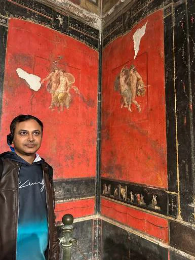

ভাবুন, একটা গোটা শহর, রাতে সবাই ঘুমাচ্ছে, হঠাৎ একটা অগ্নুৎপাত হলো, পুরো শহর শেষ হয়ে গেলো — ২০,০০০ মানুষ যে যেখানে যে অবস্থায় ছিল, সেভাবেই মারা গেল! হ্যাঁ, সেটাই হয়েছিল এই অভিশপ্ত পম্পেই এ।
পম্পেই দক্ষিণ ইতালির ক্যাম্পানিয়া অঞ্চলের একটি শহর, যার কাছে রয়েছে ভিসুভিয়াসের সক্রিয় আগ্নেয়গিরি। প্রাচীন শহর পম্পেই মানুষের কাছে যে জন্য পরিচিত, তা হলো — এই শহর ৭৯ খ্রিস্টাব্দে ভিসুভিয়াস পর্বতের অগ্ন্যুৎপাতের ফলে সমাহিত হয়েছিল। এখানকার ধ্বংসাবশেষের মধ্যে রয়েছে ফ্রেসকোড ভিলা অফ দ্য মিস্ট্রিয়াজ এবং শহরের অ্যাম্ফিথিয়েটার। ম্যাডোনা অফ দ্য রোজারির অভয়ারণ্যের ক্যাথলিক তীর্থস্থানে মোজাইক এবং একটি বিশাল গম্বুজ রয়েছে।
মেয়ের ইতিহাস বইয়ে ছবি দেখে হঠাৎ করে মনে হলো পম্পেই দেখতে হবে। সেখান থেকে ইতালির বিখ্যাত আমালফি কোস্টও ঘুরে আসা যাবে। উঠলাম, বাই তো কটক যায় — ব্যাগ টিকিট কাটা, ব্যাগ প্যাক করা হয়ে গেল। বার্সেলোনা থেকে আকাশপথে দুই ঘণ্টায় নেপলস পৌঁছালাম। এয়ারপোর্ট নামতেই মনে পড়ল ফুটবল রাজপুট মারাডোনা ও তার জন্মভূমি নেপলির কথা। কত ইতিহাস এখানে! কিন্তু আমাদের গন্তব্য তো পম্পেই — তাই এয়ারপোর্ট থেকে সোজা চলে গেলাম গাড়িবাইকে। সেখান থেকে নাম চলে একবারে সরাসরি পোর্তা (যেটা আমাদের পরের গন্তব্য)। তিনটি টিকিট কেটে উঠে পড়লাম ট্রেনে। তিনটি স্টেশন, ত্রিশ মিনিট পরেই পৌঁছে যাই। আমাদের দেশের লোকাল ট্রেনের মতোই একটা সাধারণ ট্রেন; অনেকেই দাঁড়িয়ে যাতে পায়। পথে দেখা মিলল ভিসুভিয়াসের — এই সেই দানব যে পায়ে গেলে খেয়ে ফেলে! চারিদিক সবুজ গাছপালা দেখতে দেখতে পৌঁছে গেলাম পম্পেই।
স্টেশন নেমে লাগেজ রেখে একজন গাইড নিলাম। ইংরেজি বলা গাইডের কাছে ইতিহাসটা ভালোভাবে না শুনলে, কয়েকটা ভিন্ন বাড়ি দেখে কি কিছু অন্য পাওয়া যায়! লাল ছাতা নিয়ে পথ দেখাতে দেখাতে আমাদের গাইড বলতে লাগল পম্পেইয়ের মানুষের কথা। দেখলাম গরিবের ছোট ছোট বাড়ি ও দোকান, বড়লোকদের বড় বড় বাড়ি ও কয়েকটি টেকসই প্রাসাদ। অবশেষে দেখলাম সেই অভিশপ্ত মানুষদের, যারা বসে বা ঘুমিয়ে থাকা অবস্থায় মারা গেছিল।

ভিসুভিয়াসের লাভা কিন্তু পম্পেই পর্যন্ত আসেনি; এসেছিল ছাই — ৩০০ ডিগ্রি সেলসিয়াসের ছাই। সেই ছাই এত গরম ছিল যে ২০,০০০ মানুষকে বেক করে ফেলেছিল। হ্যাঁ, যেমন করে আমরা ওভেনে চিকেন বেক করি। ১৮০০-এর দশকের শেষ দিকে যখন পম্পেই আবিষ্কার করা হয়, তখন দেখা যায় মাংস গলে গেলেও হাড়গোড়া সেইরকমই রয়ে গেছে। সিমেন্ট ঢেলে সেই হাড়গোড়ার উপর মানুষের আকার দেওয়া হয় আবার। পম্পেই গেলে দেখতে পাবেন সেই মানুষ — একটু দূর থেকে দেখলে মনে হবে সত্যিই শুয়ে বা হাঁটু মুড়ে বসে আছে। একজনের হাতগুলো হাঁটু চেপে ধরে রাখা। হয়তো ভয়ে, মারা যাওয়ার আগে, শেষ মুহূর্তে ঈশ্বরের নাম জপ করছিল।
পম্পেই নগরীর রাস্তা ছিল পাথরের। নগরের মাঝখান দিয়ে চলেছে চওড়া রাস্তা, আর দুই পাশে হাঁটার জন্য ফুটপাথ। এই রাস্তা দিয়েই বৃষ্টির জল ও বজ্র বয়ে যেত। তাই রাস্তা পারাপারের জন্য মাঝে মাঝে উঁচু পাথর দেওয়া। গাইডের কথা শুনতে শুনতে হঠাৎ বৃষ্টি নামল। আমরা পম্পেইয়ের জলনিকাশী ব্যবস্থার লাইভ ডেমো দেখে নিলাম।
পম্পেইয়ের প্রাচীন গৃহগুলোতে এখনো অবিস্মরণীয় রয়েছে সুস্পষ্ট চিত্রকলা। ওখানকার লাল মাসাইক সে সময় খুব বিখ্যাত ছিল। সেই লাল মাসাইকের অবলম্বনে আজও — ২০০০ বছর পর — চাখা ধাঁধিয়ে দেওয়ার মতো। সেই লাল মাসাইক আর তার উপর চিত্রগুলো আজও গৌরবময় অতীতের ধারা বহন করে চলেছে।
দুই ঘণ্টা ধরে ইতিহাসের পথে হেঁটে গাইড আমাদের থেকে বিদায় নিল। ওখানে ছোট মিউজিয়াম ও বইয়ের দোকানে কিছুক্ষণ ঘুরে দেখলাম। অভিশপ্ত পম্পেই আর তার হতভাগ্য লোকেদের কথা ভাবতে ভাবতে আমরা স্টেশনের দিকে এগোলাম। ট্রেন ধরে যাব আমাদের পরের গন্তব্যে — যেখানে আমালফি কোস্টের সুগভীর নীল জল আর মনোরম সমুদ্র সৈকত আমাদের জন্য অপেক্ষা করছে। থাক, সে গল্প না হয় আরেকদিন বলব।
প্রথম প্রকাশ: Sharodiya 2025, BCA Barcelona-র বার্ষিক পত্রিকা।
Follow us
Stay connected with our community and get the latest updates on events and celebrations.